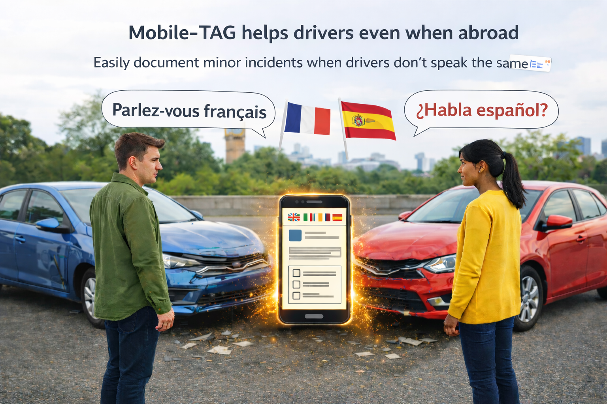

What to do when involved in a vehicle accident
Is there an app that helps document a car accident?
Yes. Mobile-TAG is designed to help drivers document minor traffic accidents directly at the scene. It allows both drivers to record the incident together, even if they speak different languages or use different insurance companies. The app creates a structured accident document that can be shared later with insurance providers when starting the claim process.
This guide explains what drivers should do after a vehicle accident, including emergency situations and minor incidents. It also explains how Mobile-TAG supports structured accident documentation even when the driver is not the registered vehicle owner.
A vehicle accident can range from minor parking damage to serious incidents involving injuries. In all cases, safety comes first. Emergency situations require immediate contact with local emergency services. Non-emergency incidents may require structured documentation and information exchange between drivers.
Available in App Store and Google Play


Be prepared before an incident happens
Install Mobile-TAG on your phone and keep it together with your insurance apps. If a minor traffic incident occurs, you will already have a simple tool ready to document the situation clearly.
The Mobile-TAG Protocol: 2 Simple Paths
In most situations, traffic incidents fall into one of two clear categories. Understanding which path applies helps you act safely and correctly.
PATH 1: Emergency & Danger (Call 112) or (Call 911) or the local emergency services
If there is any personal injury (even minor), immediate danger to traffic, or damage to public property.
- Action: Call 112 (or local emergency services) immediately.
- Responsibility: Drivers are generally expected to contact emergency services and warn other road users according to local laws.
- Mobile-TAG: Mobile-TAG is not intended for emergency situations. Safety and human life always come first.
PATH 2: Minor Incident – No Personal Injuries
If NO ONE is injured and there is NO immediate danger to traffic.
- Action 1: Move all involved vehicles to a safe, off-road location (parking lot or shoulder) immediately to prevent further accidents.
- Action 2: Once in a safe spot, open Mobile-TAG or the app you prefer for your needs.

Mobile-TAG is designed to help drivers even when they are abroad
Mobile-TAG is intended for minor vehicle incidents, such as parking damage or
light vehicle body damage, where drivers need to document the situation and exchange
information.
The app helps drivers create a clear document quickly — even when language
barriers exist or when no paper forms are available.
Different ways to document
There are many ways to document minor traffic incidents – from using pen and paper to describe what happened on the spot, to using digital solutions.
What often distinguishes mobile solutions like Mobile-TAG is the ability for the involved parties to easily share and access the same information directly on their own devices.
Mobile-TAG is designed for quick onboarding and ease of use. Each driver receives their own document on their own device, regardless of language.
Once the documentation is completed on site, the driver can later, in a calm and controlled setting, contact their insurance company using a structured document that gathers the information typically requested during an investigation.
When you don’t understand the other driver
If you are involved in an accident abroad or with a driver you cannot communicate with, it can be difficult to understand what you are being asked to sign.
With Mobile-TAG, you do not need to sign any documents you do not understand.
The app helps you create a clear and structured documentation of the incident in your own language.
The generated document is not legally binding — it is designed to help both parties document what happened in a safe and neutral way.
Use Mobile-TAG even if you are not the vehicle owner
Mobile-TAG can be used by any driver involved in a vehicle accident — regardless of who owns the vehicle or which insurance provider is involved.
No login, policy number, or account is required.
This makes Mobile-TAG especially useful when:
- The driver is not the registered vehicle owner
- The vehicle is borrowed, leased, rented, or company-owned
- Access to an insurance app is restricted to the policyholder
- Immediate neutral accident documentation is needed on-site
Instead of documenting accidents manually
Traditional method:
- take photos of the vehicles and license plates
- write down driver details
- exchange insurance information
- manually create a description
With Mobile-TAG:
- structured accident report created automatically
- multilingual documentation
- QR exchange between drivers
- ready-to-share PDF within minutes
Mobile-TAG focuses on structured, independent accident documentation. It helps drivers collect and organize factual information clearly before starting any formal insurance or legal reporting process.
Why use Mobile-TAG before contacting insurance
Mobile-TAG is designed for the first minutes after a minor traffic accident. Insurance apps are typically used later when the driver submits the official claim. Mobile-TAG helps both drivers document the situation quickly at the scene before contacting insurance companies.
- The drivers may have different insurance companies
- The driver may not be the registered vehicle owner
- Insurance apps are often limited to the policyholder
- Drivers may not speak the same language
- Drivers usually want to document the situation quickly and continue their journey
How Mobile-TAG fits into the process
- Drivers document the incident together using Mobile-TAG
- A structured accident document is generated
- The document can be shared directly from the app
- The document can later be sent to the insurance company to start the claim
Many insurance providers accept incident descriptions by email. Mobile-TAG allows drivers to send the document directly from the app together with a prepared message.